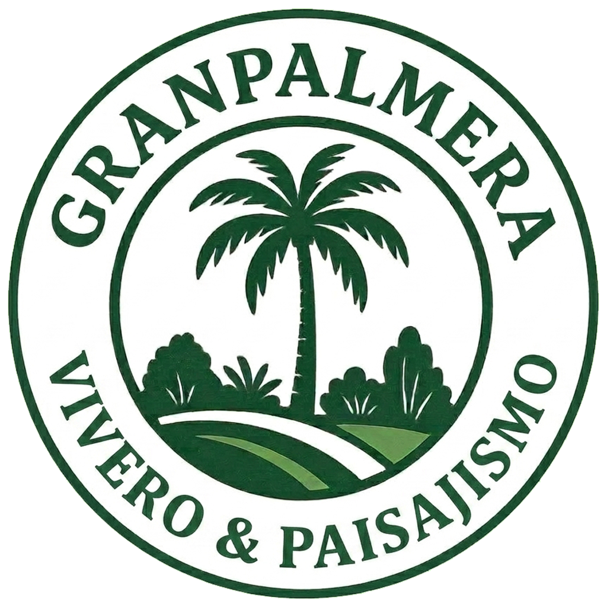

Ficha Botánica Oficial
Resistencia al frío de la Palmera Real
Roystonea regia (Kunth) O.F.Cook · Evaluación agroclimática y tolerancias térmicas mínimas para cultivo ornamental en Argentina.

Veredicto de cultivo en exterior
La palmera real vive al aire libre solo en inviernos suaves, alrededor de los 28°F (-2°C, USDA 10a+). Una helada real la dañará. Si tu invierno baja de esa temperatura, evítala. No la envuelvas esperando un milagro.
La palmera de bulevar lisa y de color gris cemento del sur de Florida. Nativa allí y en el Caribe, USDA 10a a 11a, daños cerca de los -2°C (28°F).
Resistencia al frío
Sobrevive hasta aprox. 28°F / -2°C. Rango en exterior: USDA 10a–11a. Pasa el cursor o haz clic en las zonas climáticas para consultar la tolerancia.
Zonas USDA compatibles destacadas: 10a–11a. Las regiones coloreadas en Argentina son aptas para cultivo en exterior.
Isotermas Térmicas en Argentina
Isoterma compatible en Argentina Demasiado frío
Se muestran las isotermas térmicas oficiales de la República Argentina (SMN / Plantmaps). Una región está resaltada si sus mínimas invernales permiten la supervivencia de esta especie.
Comprobación Práctica en Ciudad: Corroborá en el mapa si existen especímenes vivos de la planta que buscás registrados en el censo de Arbolado Urbano (enfocado actualmente en Capital y alrededores, como parte de un proyecto de relevamiento en constante desarrollo). Más información
Cuidado en invierno
El drenaje importa más que una manta. Suelo: Cualquier suelo bien drenado. Riego: Húmedo pero nunca encharcado (mésico). Envolver la planta no te otorga una zona climática extra. Si el invierno es más frío que su número límite (-2°C), mantenla en una maceta para resguardarla.
Datos científicos y características
- El capitel verde y el tronco gris liso son su marca de identificación incluso desde un vehículo en movimiento.
- Es nativa de partes del sur de Florida, México, América Central y el Caribe, no es una importación puramente exótica.
- Los vientos huracanados pueden defoliarla por completo. El cogollo central suele brotar de nuevo si la lanza principal no se ha pudrido.
| Altura promedio | 15–24 m (50–80 ft) |
|---|---|
| Extensión de copa | 4.5–6 m (15–20 ft) |
| Apta para interior | No |
| Requerimiento de luz | Pleno sol |
| Requerimiento de agua | Húmedo pero nunca encharcado (mésico) |
| Tipo de suelo | Cualquier suelo bien drenado |
| Región de origen | Sur de Florida, México a Centroamérica y el Caribe |
Descubrimiento e historia
Kunth publicó Oreodoxa regia en 1816. O.F. Cook la trasladó al género Roystonea en 1900, rindiendo homenaje al General Roy Stone.
Publicada por primera vez en 1900 (Roystonea); basónimo de 1816 · IPNI 222809-2
Nombres y sinónimos
Nombres comunes: Palmera real, Palmera real cubana, Palmera real de Florida.
Sinónimos: Oreodoxa regia Kunth
Guía completa de cuidados
La palmera real es el árbol de bulevar liso de color gris cemento característico del sur de Florida y el Caribe. Nativa en partes de Florida, México, América Central y las islas. Rango USDA 10a a 11a. Una helada alrededor de los -2°C (28°F) quema la copa. Requiere calor, agua y una calle ancha o espacio abierto, no un patio pequeño en zona 9.
Rápido con calor, agua y fertilización. Lento en un invierno fresco o en un alcorque ajustado.
Frutos de color púrpura-negro que consumen aves y murciélagos. Puede resultar sucio sobre autos estacionados debajo de una alineación.
Pleno sol.
Riego regular, especialmente en suelos arenosos y durante los primeros años de establecimiento. No dejes que un ejemplar nuevo se seque hasta secar la lanza.
Medio. Autolimpiante la mayor parte del tiempo, pero una hoja caída es muy pesada. Fertilizar durante la temporada de crecimiento con fertilizante específico para palmeras. La deficiencia de potasio se manifiesta como manchas translúcidas y muerte de las puntas de los folíolos.
Ganoderma en troncos viejos, amarillamiento letal en algunas regiones, cochinillas y picudos en árboles estresados. Una lanza podrida tras una tormenta es un trabajo de saneamiento y corte fitosanitario.
Plantar a pleno sol con riego en terrenos bien drenados. Evitar terrenos muy reducidos o cerca de estructuras pequeñas. No esperes que reemplace a una palmera Trachycarpus en un patio propenso a heladas fuertes.
Ficha Técnica Detallada
Análisis taxonómico, morfológico, ecofisiológico y zonificación hortícola integral de Roystonea regia.
1. Clasificación Botánica
Nombre científico completo con autoría botánica: Roystonea regia (Kunth) O.F. Cook.
Composición y etimología: El género Roystonea fue nombrado en honor al general Roy Stone (1836-1905), ingeniero militar del ejército de los Estados Unidos que prestó servicios en Puerto Rico. El epíteto específico regia proviene del latín regius, que significa real, regio o majestuoso, en alusión al porte imponente de la especie.
Familia botánica: Arecaceae.
Tribu: Areceae.
Sub-tribu: Roystoneinae.
Otros géneros de esta subtribu: Género monogenérico (Roystonea es el único género perteneciente a la subtribu Roystoneinae).
2. Nombres Comunes
Español: Palma real, palma real cubana, chonta, palma de yagua, palmera real de Florida.
Inglés: Cuban royal palm, Florida royal palm, Royal palm.
Portugués: Palmeira-imperial-de-cuba, palmeira-real-de-cuba, palmeira-real.
Lengua Nativa (Taíno/Lucayo): Yagua (término taíno utilizado para designar la cubierta foliar del capitel y la palma en su conjunto).
3. Variedades, Formas, Variegaciones e Híbridos
Variedades botánicas documentadas (var.): Roystonea regia var. hondurensis P.H.Allen.
Formas documentadas (f.): No se registran formas taxonómicas oficialmente reconocidas.
Variegaciones documentadas: Mutaciones somáticas de colección privada que presentan patrones de variegación quimérica (estriaciones amarillas o crema en los foliolos y el raquis).
Híbridos documentados: Híbridos inter-específicos espontáneos y cultivados documentados con Roystonea oleracea y Roystonea dunlapiana en colecciones botánicas tropicales.
4. Origen y Ecología
4.1. Hábitat Natural
Tipo de ambiente: Bosques húmedos tropicales de baja altitud, sabanas periódicamente inundables, márgenes de cursos de agua, vegas aluviales y zonas kársticas con disponibilidad hídrica freática.
Suelo: Suelos aluviales profundos, ricos en materia orgánica, de neutros a ligeramente alcalinos, con elevada retención de humedad pero sin encharcamiento permanente en el perfil superior.
Relieve y Altitud: Llanuras costeras, valles fluviales y laderas suaves desde los 0 hasta los 500 metros sobre el nivel del mar.
Temperaturas de origen: Temperaturas medias anuales entre 23°C y 28°C, con mínimas absolutas históricas en su rango nativo raramente inferiores a 5°C.
Pluviosidad de origen: Régimen de precipitación anual de 1200 a 2500 mm, con una estación seca corta de 2 a 3 meses.
Vegetación asociada: Comportamiento emergente en bosques tropicales semideciduos, coexistiendo con especies de géneros como Sabal, Cecropia, Ficus y Tabebuia.
4.2. Origen y Distribución Geográfica
Distribución nativa: Originaria de Cuba, el extremo sur de la península de Florida (Estados Unidos), las Bahamas, las Islas Caimán, el este de México (Veracruz, Quintana Roo, Yucatán), Belice y el norte de Honduras. Ampliamente introducida y naturalizada en regiones tropicales de América del Sur, África, Asia y Oceanía.
4.3. Nivel de Rareza
Clasificación de conservación: Clasificada en la categoría de Preocupación Menor (LC) en la Lista Roja de la UICN. Es una especie extremadamente abundante tanto en estado silvestre como en cultivo agronómico y ornamental a nivel global.
5. Morfología y Arquitectura Estructural
5.1. Macroestructura y Estípite (Tallo)
Hábito: Solitaria (monocaulescente).
Estípite: Cilíndrico, de aspecto majestuoso, frecuentemente fusiforme o ventricoso (con un engrosamiento característico en el tercio medio o en la base). Alcanza alturas de 20 a 30 metros y diámetros de 37 a 60 cm. Superficie lisa de color gris blanquecino a crema, marcada por cicatrices foliares anulares de tono más oscuro bien distanciadas entre sí.
Base: Raíces adventicias densamente agrupadas en la base del tronco formando una masa fibrosa estable, sin desarrollo de raíces fúlcreas prominentes ni neumatóforos.
5.2. Arquitectura Foliar
Vaina y Capitel: Las bases de las hojas forman una vaina cilíndrica lisa, de color verde brillante esmeralda, denominada capitel, que mide entre 1,5 y 2 metros de longitud. Es una especie estrictamente autolimpiante (las hojas viejas se desprenden completamente junto con la vaina al completar su ciclo).
Lámina: Hoja de tipo pinnada, de 3 a 4,5 metros de longitud total, levemente arqueada.
Foliolos: Reduplicados, de 60 a 80 cm de largo, insertados en el raquis en varios planos divergentes (disposición tridimensional o plumosa).
Atributos visuales: Haz y envés de color verde oscuro brillante, textura coriácea, raquis rígido de color verde pálido.
5.3. Biología Reproductiva
Inflorescencia: Infrafoliar (emerge inmediatamente por debajo del capitel verde), protegida por una gran bráctea o espata leñosa, rígida, colgante, de hasta 1,5 metros de largo. La inflorescencia está ramificada en tres órdenes y lleva miles de flores pequeñas de color blanco cremoso.
Sexo: Monoica. Las flores masculinas y femeninas se encuentran en la misma inflorescencia, agrupadas típicamente en tríadas (una flor femenina central flanqueada por dos flores masculinas).
Fruto y Semilla: Drupa ovoidal a subglobosa de 1 a 1,4 cm de longitud. Pasa de verde a rojo rosado y madura en un color púrpura oscuro o negro purpúreo. Semilla elipsoidal envuelta en un mesocarpio fibroso rico en aceites.
5.4. Valor Diagnóstico y Paisajístico
Fenología: Floración concentrada a finales de la primavera y durante el verano. Fructificación madura visible durante el otoño y el invierno, atrayendo masivamente a la avifauna frugívora.
Uso: Componente estructural de gran porte, ideal para ejes de simetría, alineaciones monumentales en avenidas, puntos de fuga arquitectónicos y parques de escala institucional.
6. Cultivo y Manejo
Ciclo de vida: Perenne arborescente.
Observaciones por etapas: La etapa juvenil (primeros 3 a 5 años) requiere sombreado parcial en vivero y protección estricta contra heladas; la etapa adulta muestra una elevadísima resistencia a vientos huracanados gracias a la flexibilidad del estípite y la baja resistencia aerodinámica de sus frondas.
Fenología de crecimiento: Mantiene un crecimiento continuo en climas cálidos; ralentiza totalmente la emisión foliar con temperaturas medias inferiores a 16°C.
Distancia de plantación: Mínima de 4 metros entre ejemplares para alineaciones densas; óptima de 6 a 8 metros. La distancia respecto a muros, cimentaciones y zonas peatonales o de estacionamiento debe ser superior a 5 metros para evitar daños por la caída repentina de frondas maduras autolimpiantes.
Luz: Plena exposición solar desde las etapas juveniles tardías. Tolera sombra ligera en los primeros estadios de desarrollo.
Suelo: Altamente adaptable. Prefiere suelos profundos, fértiles, ricos en materia orgánica, franco-arenosos o francos, con pH entre 6,0 y 7,5. Tolera suelos ligeramente calizos o moderadamente arcillosos si disponen de buen drenaje.
Riego: Requiere riego abundante durante los meses de calor y crecimiento activo. Una vez establecida en el suelo, presenta una tolerancia moderada a sequías temporales, aunque su tasa de crecimiento se ralentiza.
Humedad ambiental: Rango óptimo entre 65% y 90%. En ambientes con humedad relativa continuamente inferior al 40%, las puntas de los foliolos sufren desecación apical.
Fertilización: Aplicación de fertilizantes específicos para palmeras con formulación NPK 8-2-12 o 16-4-24, conteniendo 4% de magnesio y microelementos solubles (manganeso, hierro y boro) tres veces al año (inicio de primavera, mediados de verano e inicio de otoño).
Plagas y enfermedades: Afectada por la chinche de la palma real (Xylastodoris luteolus), el picudo negro de la palmera (Rhynchophorus palmarum) y hongos patógenos como Ganoderma zonatum (pudrición basal del estípite), Phytophthora palmivora y Thielaviopsis paradoxa.
Métodos de propagación: Exclusivamente por semillas. Las semillas limpias requieren remojo en agua durante 72 horas y germinan entre los 60 y 90 días a temperaturas constantes de 28°C a 32°C.
7. Requerimientos Ecológicos o Cultivo
Adaptabilidad: Presenta una plasticidad ambiental moderada-alta en climas tropicales y subtropicales cálidos. Muestra baja adaptabilidad a climas templados fríos con heladas recurrentes o a regiones árida-frías.
Dinámica de crecimiento: Crecimiento inicial lento a moderado durante la fase de establecimiento del sistema radicular y la formación de la base del tronco (3 a 4 años). Posterior aceleración vertical rápida alcanzando el porte adulto en 10 a 15 años bajo condiciones agroclimáticas ideales.
Mantenimiento: Muy bajo mantenimiento en poda, ya que la naturaleza autolimpiante de la especie elimina la necesidad de cortar frondas secas. El trabajo se limita a la recogida de las hojas caídas en la base y a la fertilización periódica.
8. Desarrollo y Biología
Hábito de crecimiento: Arborescente solitario de gran verticalidad.
Velocidad de crecimiento: Rápida en condiciones óptimas de calor y disponibilidad hídrica. Moderada en zonas subtropicales de transición. Lenta en contenedores o suelos deficientes.
Dinámica de crecimiento: Fase juvenil foliar acaulescente (0-4 años); fase de rápida elongación vertical del estípite (5-15 años); fase de madurez estructural y ralentización del crecimiento apical (15-80+ años).
Longevidad: Larga, pudiendo alcanzar entre 80 y 120 años de vida.
Tasa de elongación del estípite: De 40 a 80 cm por año en condiciones climáticas óptimas; de 15 a 30 cm por año en regiones marginales.
Tasa de emisión foliar: Producción de 8 a 12 hojas nuevas por año en clima tropical; de 4 a 6 hojas por año en zonas subtropicales con pausa invernal.
GDD (Growing Degree Days): Requiere un acumulado térmico anual elevado, superando los 2000 GDD calculados sobre una base de 10°C.
9. Requerimientos Agroclimáticos, Adaptabilidad Térmica y Zonificación Horticultural
9.1. Parámetros Ecofisiológicos de Crecimiento
Temperatura Base (Tbase): 12°C. Por debajo de este umbral fisiológico, la palmera detiene la absorción activa de nutrientes y el alargamiento celular en el meristemo.
Grados Día de Crecimiento (GDD): Requiere una alta acumulación de calor durante la estación de crecimiento para recuperarse de los periodos fríos y emitir la masa foliar correspondiente.
Requerimiento de Sumatoria Térmica: Muy alto. Necesita veranos cálidos y prolongados con temperaturas diurnas superiores a 25°C.
Temperatura óptima de crecimiento: Comprende la franja de 25°C a 35°C.
9.2. Clasificación Climática y Zonificación
Clasificación Köppen-Geiger: Af (clima de selva tropical), Am (clima monzónico) y Aw (clima de sabana tropical).
Clasificación USDA (Exterior/Cultivo en suelo): Zonas 10a a 11b. Soporta heladas leves y breves de hasta -2,2°C sin daños estructurales irreversibles en el cogollo.
Clasificación USDA (Patio/Maceta Móvil): Zonas 8b a 9b. Requiere traslado a espacios protegidos o invernaderos durante la época invernal.
AHS Heat Zones: Zonas 10 a 12 (tolerancia alta a días con temperaturas superiores a 86°F / 30°C).
Sunset Climate Zones: Zonas 23, 24, H1 y H2.
RHS Hardiness Rating: Rating H3 (Tender / sensible a heladas continuas).
European Garden Flora: Zona Subtropical / Mediterránea Cálida.
9.3. Tolerancias Ambientales y Respuesta al Estrés
Tolerancia al frío: La masa foliar sufre necrosis foliar parcial a partir de -1°C a -2°C. Exposiciones prolongadas (más de 4 horas) a temperaturas de -3°C a -4°C pueden causar la muerte del meristemo apical.
Comportamiento invernal: En zonas de transición experimenta una detención metabólica completa, acompañada de un amarillamiento leve en las frondas viejas debido a la baja absorción de nutrientes por raíces frías.
Tolerancia al calor: Excelente. Resiste temperaturas superiores a 40°C siempre que la humedad del suelo sea adecuada para suplir la elevada demanda evapotranspirativa.
9.4. Estrategias de Manejo y Protección
En regiones con riesgo de heladas: Proteger el tronco y el capitel envolviendo el meristemo con telas agrícolas de protección térmica (antihelada). Suspender la fertilización nitrogenada al final del verano para favorecer la lignificación tisular y evitar riegos nocturnos en episodios de frío.
En regiones con temperaturas muy elevadas: Mantener una capa gruesa de cobertura vegetal o mulching sobre la proyección de la copa e incrementar la frecuencia de riego por goteo.
En espacios interiores: No se recomienda para interiores convencionales debido a sus requerimientos de radiación solar directa y volumen. Solo viable en atrios de gran escala o invernaderos monumentales con control de humedad ambiental.
10. Manual de Ubicación: Maceta, Interior y Exterior
Cultivo en Maceta: Clasificación Baja. La especie desarrolla una potente raíz pivotante inicial y una densa cabellera radicular adventicia que satura rápidamente cualquier contenedor, provocando un rápido estancamiento del desarrollo y síntomas severos de deficiencia nutricional.
Cultivo en Interior: Clasificación Muy Baja. Exige niveles de radiación fotosintéticamente activa (PAR) elevados que rara vez se alcanzan en interiores residenciales, sumado a un ritmo de crecimiento vertical que sobrepasa las alturas de techo estándares en pocos años.
Cultivo en Exterior (Argentina). Viabilidad por Regiones:
Región Noreste / Misiones, Corrientes, Formosa (Zona 10a a 10b): Viabilidad Excelente. En localidades como Posadas (Zona 10a: -1,1°C a 1,7°C), Corrientes (Zona 10b: 1,7°C a 4,4°C), Formosa (Zona 10b: 1,7°C a 4,4°C) y Tartagal (Zona 10b: 1,7°C a 4,4°C), Roystonea regia encuentra condiciones agroclimáticas ideales, con un crecimiento vigoroso y desarrollo pleno del estípite a cielo abierto sin necesidad de protección invernal.
Región Área Metropolitana de Buenos Aires y Costa Fluvial (Zona 10a a 10b): Viabilidad Alta en Microclimas Urbanos. En Ciudad Autónoma de Buenos Aires (Zona 10b: 1,7°C a 4,4°C), Banfield, Berazategui, Caseros, Castelar, Lanús, Lomas de Zamora, Quilmes y Tigre (Zona 10a / 9b), la palmera prospera satisfactoriamente gracias al efecto de isla de calor urbana y la moderación térmica del Río de la Plata, requiriendo únicamente protección contra vientos fríos del sur en especímenes jóvenes.
Región Pampeana de Transición / La Plata, Rosario, Santa Fe, Córdoba, Gualeguaychú (Zona 9b): Viabilidad Media a Condicional. En localidades situadas en Zona 9b (-3,9°C a -1,1°C) como Rosario, Córdoba, La Plata, Santa Fe, Paraná, Gualeguaychú, Concordia y San Miguel, se observa un comportamiento funcional pero con riesgo de defoliación parcial durante inviernos severos. Se recomienda su ubicación en patios internos, orientaciones al norte protegidas por muros o estructuras consolidadas.
Región Centro-Serrana, Cuyo y Pampa Sur / Mendoza, San Juan, Bahía Blanca, Tandil, Mar del Plata (Zona 9a): Viabilidad Baja. En ubicaciones como Mendoza, San Juan, Bahía Blanca, Mar del Plata, Tandil, Olavarría y Santa Rosa (Zona 9a: -6,7°C a -3,9°C), la ocurrencia de heladas secas o prolongadas genera daños fisiológicos severos en el meristemo y defoliaciones continuas que imposibilitan el desarrollo del estípite a largo plazo sin sistemas de calefacción o invernadero.
Región Patagónica / Bariloche, Puerto Madryn, Trelew, Comodoro Rivadavia, Ushuaia (Zonas 8a, 8b y 9a): Viabilidad Nula / No Viable. En San Carlos de Bariloche, Puerto Madryn, Rawson, Trelew (Zona 8b: -9,4°C a -6,7°C), Río Gallegos (Zona 8a: -12,2°C a -9,4°C) y Ushuaia (Zona 9a: -6,7°C a -3,9°C), las temperaturas invernales extremas y la falta de acumulación de calor estival hacen imposible la supervivencia de la especie al aire libre.
11. Referencias Bibliográficas
- Broschat, T. K. (2018). Nutritional Deficiencies of Landscape Palms in Florida. UF/IFAS Extension Publication ENH1018. University of Florida.
- Cook, O. F. (1901). A Synopsis of the Palms of Puerto Rico. Bulletin of the Torrey Botanical Club, 28(10), 525-569.
- Dransfield, J., Uhl, N. W., Asmussen, C. B., Baker, W. J., Harley, M. M., & Lewis, C. E. (2008). Genera Palmarum: The Evolution and Classification of Palms. Royal Botanic Gardens, Kew.
- Zona, S. (1996). Roystonea (Arecaceae: Arecoideae). Flora Neotropica, 71, 1-35.
- Plantmaps (2026). Argentina Plant Hardiness Zone Map - Interactive Celsius Version. Basado en datos climáticos del USDA.
Palmeras relacionadas y alternativas
Opciones con diferentes niveles de resistencia térmica:
El paisaje como parte de la arquitectura.
Provisión de palmeras de colección, ejemplares de gran porte y proyectos de paisajismo en Posadas y Misiones. Contanos tu proyecto.